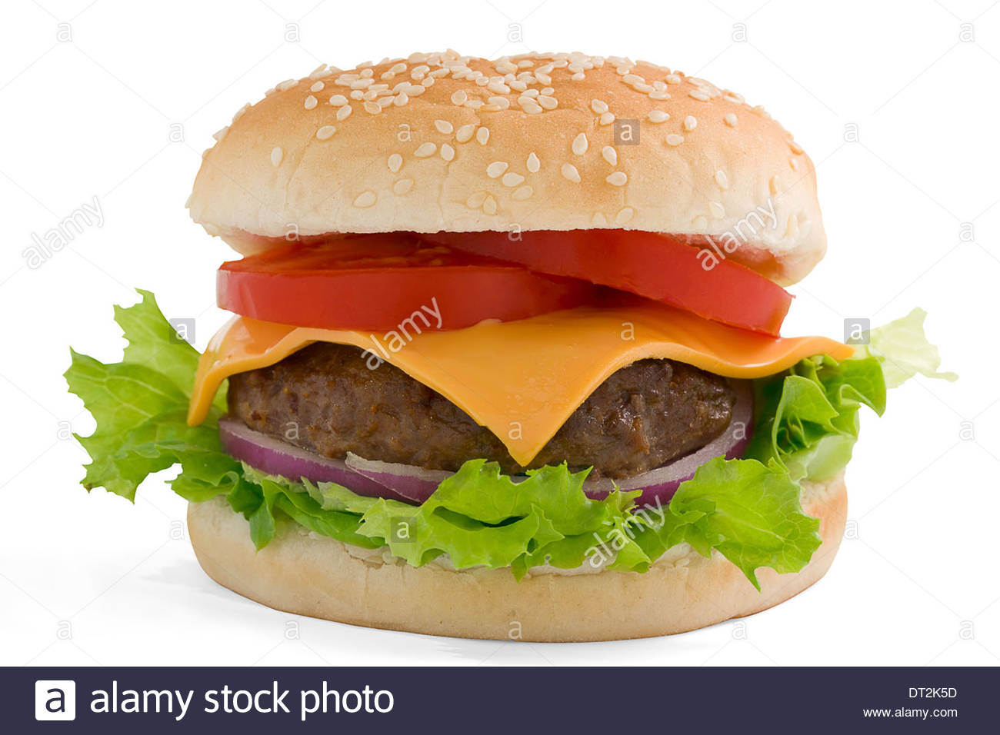
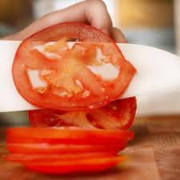
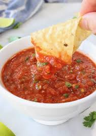

Chapter 3 discusses the Truth Continuum. A data visualization is a model used show data in way that simplifies the data. Cairo asserts that models which adequately stand for what they are trying to show and are easy to interpret to find meaning are better. Cairo discusses how models can be misleading and that some people make misleading models intentionally to misguide their interpretations to benefit their own causes. But models can also be unintentionally misleading. Both the creator of the model and the viewer can misinterpret the model and get the wrong idea about the data. Often context is required to ensure appropriate models and portray the information you want to show. The simpler a model can be, the less likely it is to be misinterpretted and thus the better the model will be. However, models sometimes need to be more complex in order to ensure accurate interpretation of the information. Simplicity is reducing the model to only the relevant details and adding what is meaningful.
Often I tell people I don't like tomatoes. This is not quite true though but it is easier and more effective and efficient for me to say this rather than explain how I feel about tomatoes. I like tomatoes, but only when they are prepared or presented in a way that I like. For example, I do not like a thick slice of a tomato on a sandwich, but I do like a thin slice. I don't like to have too much tomato on my sandwich, but I would much rather have no tomato than a thick slice of tomato that I will just end up taking off my sandwich and not eating. I also don't like large chunks of tomato in a salad or a burrito or wherever else one might put chopped tomato, but I do tiny cubes of tomato in things. I also like salsa, and this often confuses people, but salsa has a different texture and really that is the most important factor in whether or not I like to eat a certain item.
  